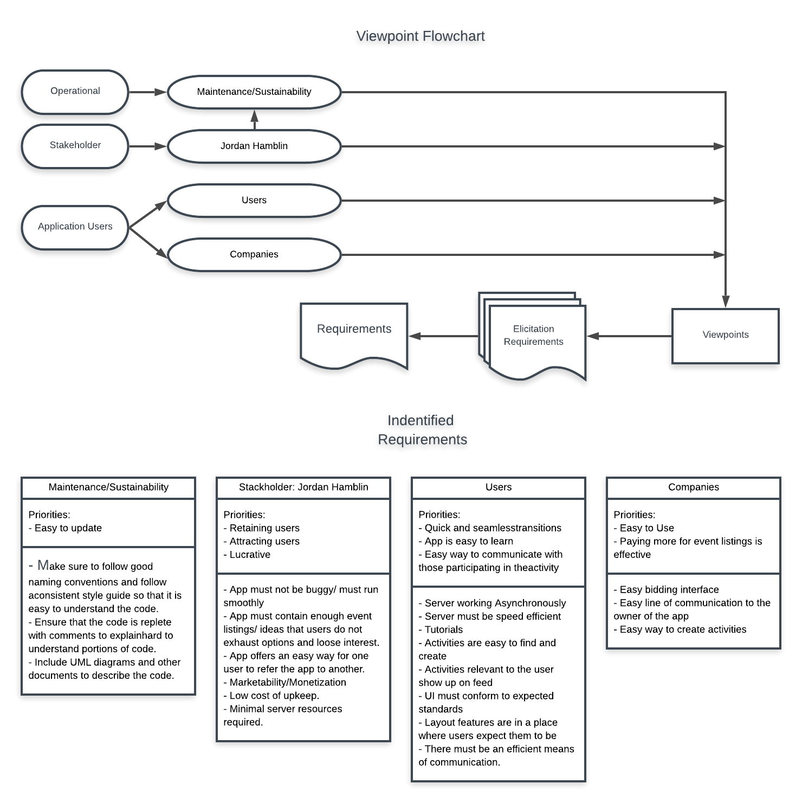

The viewpoints technique gathers requirements about a project by looking at the project from several different viewpoints. To be most effective it is important to identify as many relative viewpoints as possible and then discover the priorities each has in relation to the project. This creates a broader view of the requirements so that the finished product will fulfill the needs of all involved parties. This includes the users, customers, owners, developers, and anyone else who will be affected by the project. By taking all these varying viewpoints into account we avoid focusing on one aspect of the project to the exclusion and detriment of other parts of the project. After evaluating each viewpoint, it is possible that you will find conflicting priorities between two or more viewpoints. It is important to either discover a way to satisfy both priorities, or prioritize one viewpoints interest over that of another.
By applying this elicitation technique, we have identified differing priorities among the 4 viewpoints that we identified. Although we found a conflict of priorities between users and customers of the application, we have identified several ways to balance the priorities where they are at odds and thereby mitigate possible negative side effects.
The view-point technique's purpose is to recognize the existence of multiples perspectives and provide a way to understand the conflicts in the requirements proposed by stakeholders. This technique will provide a better understanding of the requirements proposed by different parties interested in the application.
Jordan Hamblin, businesses that are promoting their services,
Compare and contrast the priorities and requirements from the various points of view and determine the correct balance between them to implement in the final project.
This technique requires little follow up. After defining the requirements, they will be recorded into the report.
Microsoft Word
The following are depictions of the viewpoint process that was followed.
We have been able to identify four key viewpoints for this application. They are as follows, maintenance and sustainability, the owner, user’s perspective, and company’s perspective. Each of these viewpoints identifies key parts of the app that will need to be present in order to ensure that the app is successful.
The app needs to be easy to update overall. This should be done through ensuring that code is readable and easy to follow. The code should be designed in a way that it is both modular and polymorphic so that it is adaptable and easy to change. Good documentation should also be included throughout the code itself as well as in external documents to provide clear understanding of how it works.
This app also needs to have a way to attract users as well as retain them, and it needs to be lucrative. From an owner’s perspective, they need to have a way to see data and statistics about the app, specifically the number of new users joining, retention levels, how users are finding out about the app, etc. Social media avenues should also be explored in order to increase publicity. The app should not be buggy so that users will not be frustrated. There must also be a sufficient diversity of activities to keep users interested and using the app. Generally, the upkeep of the app should be low so that profits can be maximized; and the app should also offer an easy way to refer new users.
From a user’s perspective, the app needs to have quick and seamless transitions; it needs to be simple and quick to learn; and there needs to be a simple way for users to communicate one with another. To accomplish this, the server should be working asynchronously and should be fast enough to support many users at one time. There should also be tutorials in the app to educate new users. Activities should be easy to create and relevant ones should show up on the user’s feed. The UI should have a layout where tools and features are arranged in places where users would expect them to be.
From a company’s perspective the apps should have a simple UI that allows business to get to bidding for slots quickly, as well as display informative data related to the company’s posting. This should be accomplished through a simple bidding interface and a dashboard where companies can view data briefly. Companies should also have a direct line of communication to the owner or a support center as well. Companies need an easy UI to create and list activities as well that should be different from the user’s option to create activities.
There were a few conflicting viewpoints which we discovered as well. The first is that of user’s seeing relevant activities and the ones they want as opposed to the ones the companies have paid for. The resolution we recommend for this would be to have a general feed where activities show up for the user and on this activity the companies who have paid for slots will always have their postings listed first. From this general feed users would have the option to go to a settings menu and select a filter for relevant activities which would then show them things more relevant to them. This would satisfy both demands.